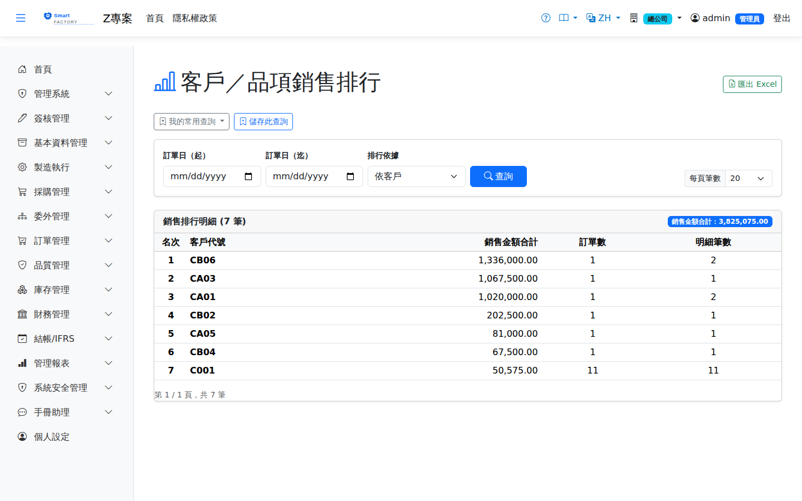

銷售排名Sales Ranking
路由：/SalesRanking | 客戶/品號銷售金額排名Route: /SalesRanking | Sales amount ranking by customer and product
依期間彙總出貨金額，排名客戶與品號貢獻度，附排名圖表。Summarizes shipment amounts by period and ranks the contribution of customers and products, with a ranking chart.

銷售排名畫面截圖（示意，實際欄位/資料依權限與查詢條件而異）Sales ranking screenshot (illustrative; actual fields and data vary by permission and query criteria)
查詢Search
1
查詢列輸入條件後點「查詢」；欄位標題可點擊排序，清單下方有分頁導航。Enter your criteria on the query bar and click "Search"; column headers can be clicked to sort, and the paging controls sit below the list.
欄位說明Field reference
查詢條件Query criteria
| 條件Condition | 說明Guide |
|---|---|
| 訂單日（起 / 迄）Order date (from / to) | 納入排行統計的接單日期區間。留白時預設近 30 天，不是「不限起日」Order date range included in the ranking. Left blank, it defaults to the last 30 days rather than to no lower bound. |
| 排行依據Group By | 彙總維度（依客戶／依品號／依業務等），決定名次以什麼為單位Grouping dimension (by customer, by product, by sales rep …), which decides what the ranking counts |
報表欄位Report fields
| 欄位Field | 說明Guide |
|---|---|
| 名次Rank | 依銷售金額由大到小的排序Sorted by sales amount, highest first |
| （排行對象）(ranking entity) | 欄名隨「排行依據」變動，顯示客戶、品號或業務The column name follows the "Group By" selection and shows the customer, product or sales rep |
| 銷售金額合計Total Sales Amount | 該對象在區間內的訂單金額合計（本位幣）Total order amount for the entity within the period (local currency) |
| 訂單數Order Count | 涉及的訂單張數Number of orders involved |
| 明細筆數Lines | 涉及的訂單明細行數；與訂單數落差大代表單張訂單品項多Number of order lines involved; a big gap against the order count means many items per order |